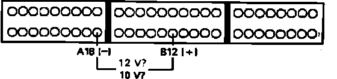

PSP Switch Signal Circuit Troubleshooting
Power Steering Pressure Signal Diagnosis:

1. Install test harness between ECU and harness connector. If test harness is not available, carefully backprobe wires at ECU connector.
2. With ignition on, measure voltage between terminals B12 and A18.
Battery voltage, proceed to next step.
Not battery voltage, proceed to step 7.
3. Disconnect P/S pressure switch electrical connector at rear of engine compartment.
4. Connect RED and BLK terminals of pressure switch harness connector together.
5. Recheck voltage across ECU terminals A18 and B12.
Approx. 10 volts, proceed to next step.
Not approx. 10 volts, replace P/S pressure switch. End of test.
6. Repair open RED wire between ECU terminal B12 and pressure switch or BLK wire between pressure switch and ground.
7. Start engine.
8. Measure voltage across ECU terminals B12 and A18 while turning steering wheel slowly.
Approx. 10 volts, pressure switch functioning properly. End of test.
Not approx. 10 volts, proceed to next step.
9. Disconnect connector B from main harness only, leave attached to ECU.
10. Check voltage between terminals B12 and A18.
Approx. 10 volts, proceed to next step.
Not approx. 10 volts, replace electronic control unit. End of test.
11. Reconnect B connector to main harness and disconnect 2 wire connector from P/S pressure switch.
12. Check voltage across ECU terminals B12 and A18.
Approx. 10 volts, replace pressure switch. End of test.
Not approx. 10 volts, proceed to next step.
13. Repair short in RED wire between ECU terminal B12 and pressure switch.